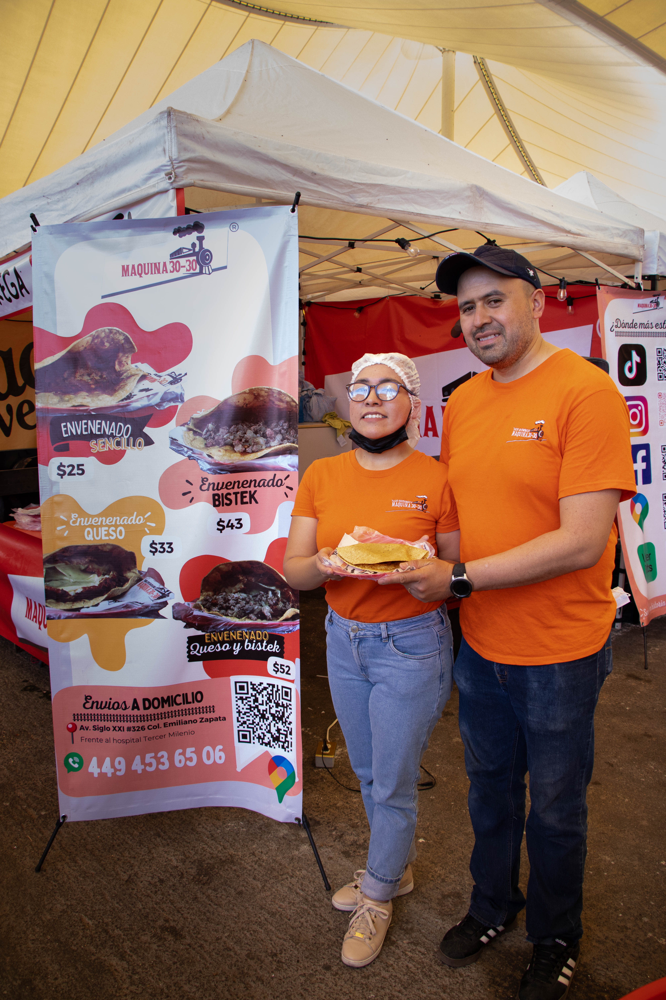

Máquina 30-30 nació de una historia que parecía escrita por el destino. De la unión de un corazón zacatecano y un alma aguascalentense surgió algo más que un sueño: nació una familia, una idea y una tradición que hoy se sirve en cada platillo. Entre conversaciones largas, ganas de salir adelante y el deseo de construir algo propio, decidieron tomar el sabor de México y convertirlo en una experiencia llena de identidad. Así comenzaron, con esfuerzo, ilusión y recetas que guardaban el calor del hogar, creando tacos envenenados con ese sazón que abraza el alma y despierta recuerdos. Pero Máquina 30-30 no solo honra la tradición mexicana; también le da un toque diferente, moderno y auténticamente hidrocálido. Porque cuando las raíces zacatecanas se mezclan con el espíritu cálido y trabajador de Aguascalientes, nace algo especial: una cocina con carácter, innovación y muchísimo corazón. Cada taco cuenta una historia de amor, de lucha y de sueños compartidos. De dos personas que entendieron que salir adelante no siempre significa tomar el camino fácil, sino caminar juntos, incluso cuando todo parece incierto. Hoy, Máquina 30-30 es más que un negocio. Es el resultado de creer en el amor, en la familia y en la fuerza de nuestras raíces mexicanas. Un lugar donde la tradición se reinventa, donde el sabor une personas y donde cada bocado lleva un pedacito de esa historia que comenzó con dos corazones y terminó convirtiéndose en un sueño hecho realidad.
